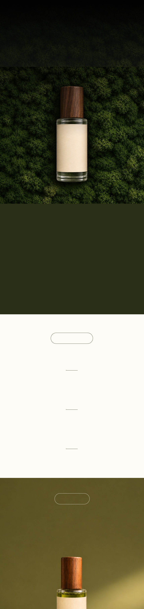
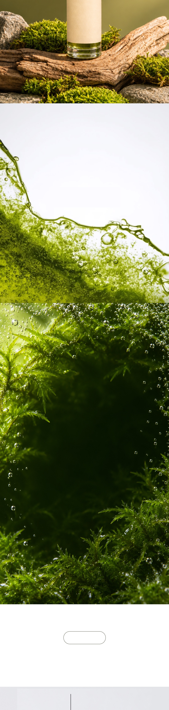
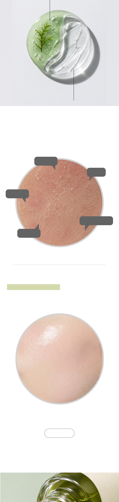
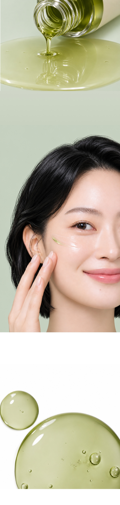
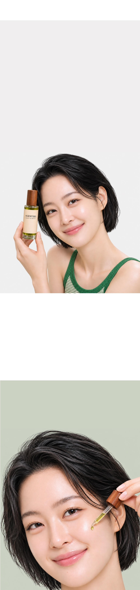
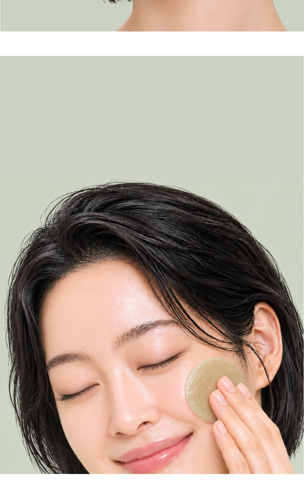

MOSS VEIL SERUM
모스 베일 세럼
고요한 숲에서 영감을 받은 세럼
50 mL
Inspired by the
Quiet of the Forest
고요한 숲에서 영감을 받은 세럼
sunminmoss veil serum
A Veil of Moisture
이끼가 물기를 머금은 숲의 모습에서 영감을 받았습니다.
한 방울을 덜어 피부에 얇게 펴 바르는 순간,
매일의 보습을 가볍게 시작해 보세요.
Key point
01숲의 이끼에서 시작된 세럼
02보습을 위한 성분 2가지
03피부 위에 가볍게 내려앉는 수분 한 겹
Point 1
숲의 이끼에서 시작된 세럼

sunminmoss veil serum
이끼는 어떻게
물을 머금을까요?
숲의 그늘에서 만난
물기를 머금은 이끼
잎과 몸의 표면으로 물을 흡수하는 이끼!
겹겹이 포개진 잎과 좁은 틈 사이로 수분을 머금는 모습에서
모스 베일 세럼은 영감을 받았습니다.
Point 2
보습을 위한 성분 2가지

히알루론산
수분을 끌어당기는 보습 성분
자극받고 메마른
푸석푸석한 피부
자극민감
속당김
푸석푸석
칙칙한 피부톤
울퉁불퉁
모스 베일 세럼으로
피부 속광채 충전
Point 3
피부 위에 가볍게 내려앉는 수분 한 겹

깊숙이 채워주는
배양이끼 유래 성분으로
속부터 차오르는
탄탄한 속광채
texture
고농축 세럼도
가볍고 산뜻하게

- 제형
- 쫀쫀함이 느껴지는 고농축 액상 제형
- 발림성
- 매끄럽고 부드러운 발림성
- 마무리감
- 피부에 깊게 흡수되어 깔끔하고 산뜻한 마무리감
- 향
- 시원하고 은은한 우드향
이런 분들께 추천해요
- 뭘 발라도 푸석한 피부
- 빠른 진정이 필요한 피부
- 스킨케어를 해도 속당김이 느껴지는 분
- 은은한 윤기와 속광채를 원하는 분
- 화장이 잘 먹는 밀착 피부를 원하는 분
how to use
활용법 200%
이렇게 사용해 보세요
1. 속광채 피부를 위한 데일리 케어
세럼을 적당량 덜어
부드럽게 펴 발라 흡수시켜 주세요.

2. 중요한 약속 전날, 스페셜 세럼팩
- 화장솜에 세럼을 덜어 적셔 주세요.
- 세럼을 머금은 솜을 피부에 10분 동안 붙여 주세요.
상품정보고시 · 모스 베일 세럼 50 mL
- 제품명
- 선민 모스 베일 세럼 (sunmin moss veil serum)
- 용량
- 50 mL
- 주요 성분
- 상세 설명 참조
- 사용기한
- 생산일 기준 30개월 / 개봉 후 12개월
- 제조국
- 대한민국
- 기능성 여부
- 주름 개선 기능성 화장품
- 사용 방법
- 상세 설명 참조
- 사용할 때의 주의사항
-
- 사용 중 또는 사용 후 직사광선에 의해 사용 부위에 붉은 반점, 부어오름, 가려움증 등 이상이 있는 경우 전문의와 상담하세요.
- 상처가 있는 부위에는 사용을 자제해 주세요.
- 어린이의 손이 닿지 않는 곳에 보관하고 직사광선을 피해 주세요.